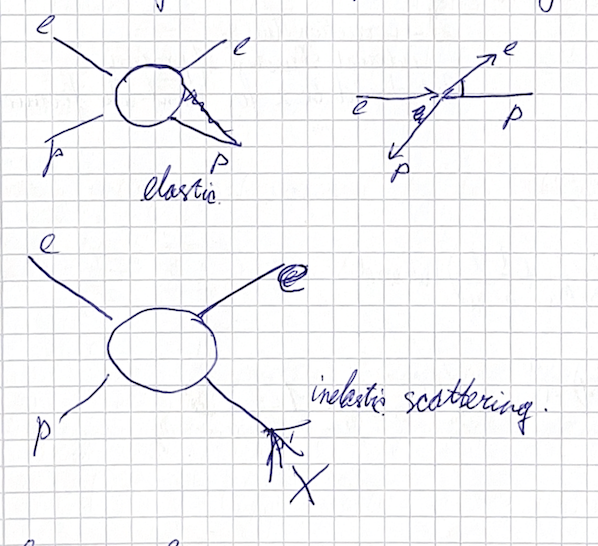
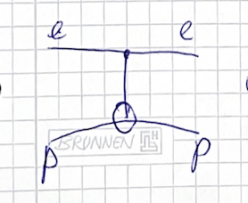

(2024) Lecture 3
Presenter: Mikhail Mikhasenko
Note Taker: Ilya Segal
1 Lecture Recording with Whisper
Recording Experiment
My experiment with recording lectures has been relatively successful, and I could recover what I was speaking.
There is an open large language model from OpenAI that can translate audio to text, called Whisper. Since the architecture is known, there is a C limitation that even runs parallel on Mac. You just download and execute, and then you have a transcript of your speech.
The lecture is recorded. I do it for myself, but it might be converted to some document. But I don’t know what to do with that. Just for fun and for exploring the technologies, I will keep the recordings.
It records only me in the sense that it is mostly me who speaks. Don’t hesitate to talk back, because this will not appear in the recordings anyway.
| Aspect | Detail |
|---|---|
| Audio-to-text model | Whisper (OpenAI, open source) |
| Running on Mac | “C limitation” that runs in parallel |
| Transcript generation | Download and execute |
| Recording purpose | Self-reference, fun, technology exploration |
| Recorded voice | Mostly professor only |
| Student participation | Not captured |
2 Isospin Assignments for Mesons and Pentaquarks
2.0.1 Isospin Assignments
Isospin involves only the light quarks u and d . The strange quark is light but not included in isospin. Heavy quarks are often denoted with capital Q , light quarks with q or l .
A particle’s isospin depends on the number of light ( u,d ) quarks:
- 0 light quarks → isospin 0
- 1 light quark → isospin 1/2
- 3 light quarks → isospin 3/2 (like the \Delta group) or also 1/2 .
The table lists common examples:
| Particle | Composition | Light quarks | Isospin | Charge multiplets |
|---|---|---|---|---|
| c\bar{s} meson | c\bar{s} | 0 | 0 | singlet |
| B meson | b\bar{q} ( q=u,d ) | 1 | 1/2 | doublet: B^0 ( \bar{b}d ), B^+ ( \bar{b}u ) |
| Cascade B ( \Xi_b ) | b s u (or b s d ) | 1 | 1/2 | doublet: charge 0 ( b s u ), charge -1 ( b s d ) |
| P_c pentaquark (observed in J/\psi p ) | three light quarks | 3 | 3/2 (like \Delta ) | for I=3/2 : four states ( P_c^{++},P_c^+,P_c^0,P_c^- ) |
| P_c alternative | three light quarks | 3 | 1/2 | doublet: P_c^+ , P_c^0 |
Notation: \bar{q} refers to a light antiquark. Heavy quarks are often written as capital Q (e.g., c , b ). If a particle has no light quark (like B_c ), its isospin is 0 .
2.1 Antiparticles
For antiparticles, the quark content is completely conjugated:
- B^+ ( u\bar{b} ) has antiparticle B^- ( b\bar{u} ).
- B^0 ( d\bar{b} ) has antiparticle \bar{B}^0 ( b\bar{d} ).
For the Cascade B , the doublet members have antiparticles with opposite charges.
The antiparticle of P_c^+ is not P_c^- ; it is a different state with opposite quark content (antiquarks and baryon number -1 ).
2.2 Charge calculations for the Cascade B doublet
- The combination b s u : b and s each have charge -\frac13 , u has +\frac23 → total charge 0 .
- The other member b s d : b and s $- , d$ -\frac13 → total charge -1 .
3 Constructing Isospin States for Three Quarks
3.1 Isospin of \Delta^{++} and Construction of \Delta^{+}
The \Delta^{++} has isospin I = \frac{3}{2} ( I_{\Delta^{++}} = \frac{3}{2} ). If you try to construct a |UUD\rangle state, you cannot obtain I_3 = \frac{3}{2} — that state necessarily has I_3 = \frac{1}{2} . The states |UUD\rangle and |DDU\rangle also exist.
3.2 Lowering Operator and the \Delta^{+} State
To obtain the I_3 = \frac{1}{2} state, we act with the lowering operator on the maximal isospin state. The derivation is correct. Our goal is the quark‑flavor basis function. We need to construct the basis of irreducible representations. The easiest way is to start with the state we know for sure: the maximum isospin, \frac{3}{2} . (The notation is equivalent for spin and flavor.)
Act with the lowering operator. The general formula is
I_-|I,M\rangle = \sqrt{I(I+1)-M(M-1)}\,|I,M-1\rangle.
For M=I this becomes \sqrt{2I} . Since I=\frac{3}{2} , the factor is \sqrt{3} .
The lowering operator I_- acts as a sum of operators on each quark: I_- = I_{1-}+I_{2-}+I_{3-} . Applying it to |uuu\rangle gives
I_-|uuu\rangle = |duu\rangle + |udu\rangle + |uud\rangle.
To obtain a normalized state we compute the inner product.
Same‑flavor states are orthonormal; different‑flavor states are orthogonal.
Therefore the normalization factor is 1/\sqrt{3} :
|\Delta^+\rangle = \frac{1}{\sqrt{3}}\bigl(|uud\rangle + |udu\rangle + |duu\rangle\bigr).
Applying further lowering operators yields the other isospin states ( \Delta^{0} , \Delta^{-} ).
3.3 Analogous Construction for Spin
Recall last time we discussed the case of total spin S=47 , which gives a representation of dimension 95 . To build that from spin‑ \frac12 particles, you need 94 such particles. The total Hilbert space of 94 spin‑ \frac12 particles has dimension 2^{94} , which decomposes into irreducible representations of total spin from 0 up to 47 with various multiplicities. The same principle applies to isospin for three quarks.
3.4 Dimensionality of the Three‑Quark Isospin Space
Now let us return to the question of dimensionality. For three quarks, each quark carries an isospin doublet. The number of basis vectors in the tensor product space is 2^3 = 8 . Explicitly, the basis states are
- |uuu\rangle
- |uud\rangle
- |udu\rangle
- |udd\rangle
- |duu\rangle
- |dud\rangle
- |ddu\rangle
- |ddd\rangle
4 Isospin Decomposition and Multiplet Construction
The dimensionality of the isospin matrix acting on this space is 8, giving an 8 \times 8 matrix. These combinations can be arranged so that under isospin rotations they transform together without mixing—this is called splitting into irreducible representations, i.e., grouping the basis functions into multiplets.
To answer the last question, we perform the spin algebra:
\frac{1}{2} \otimes \frac{1}{2} = 1 \oplus 0
and then
\frac{1}{2} \otimes \frac{1}{2} \otimes \frac{1}{2} = \frac{1}{2} \oplus \frac{1}{2} \oplus 1 \oplus 0 .
The product of dimensions is 2 \times 2 \times 2 = 8 , and the sum of the dimensions of the irreducible representations is 2 + 2 + 3 + 1 = 8 . Hence the 8 \times 8 matrix can be split into blocks of dimensions:
| Irreducible representation | Dimension |
|---|---|
| \frac12 | 2 |
| \frac12 | 2 |
| 1 | 3 |
| 0 | 1 |
This corresponds to the ESME (Explicit Symmetry Multiplet Expansion).
It is clear how to construct the basis for the highest isospin: start with the state uuu and then apply the lowering operator. But how do we construct the others?
5 Constructing Orthogonal Basis States via Spin Algebra
5.1 Basis States and Orthogonal Combinations
The basis for the isospin-1/2 and isospin-3/2 representations is discussed. For the isospin-1/2 sector, we only have two basis states (e.g., the proton and neutron). The axis of isospin defines the projection.
Baryon wavefunctions factorize as:
\Psi = \Psi_{\text{color}} \otimes \sum_i \Psi_{\text{isospin}} \otimes \Psi_{\text{spin}}
When combining the isospin of two quarks, we have:
\frac{1}{2} \otimes \frac{1}{2} = 1 \oplus 0
For three quarks, the decomposition is:
\frac{1}{2} \otimes \frac{1}{2} \otimes \frac{1}{2} = \frac{1}{2} \oplus \frac{1}{2} \oplus 1 \oplus 0
This accounts for the two distinct isospin-1/2 states in the baryon octet.
5.2 Constructing Orthogonal Wavefunctions
We need to build wavefunctions that are orthogonal to those already constructed. The available states with isospin projection +1/2 are linear combinations of the three-quark states |uud\rangle , |udu\rangle , and |duu\rangle .
Two orthogonal combinations (up to normalization) are:
| State | Expression |
|---|---|
| Symmetric (S) | \frac{1}{\sqrt{3}}( |uud\rangle + |udu\rangle + |duu\rangle ) |
| Antisymmetric (A) | \frac{1}{\sqrt{2}}( |uud\rangle - |udu\rangle ) |
These are obtained by taking the available states and subtracting one from the other.
The scalar product of the symmetric and antisymmetric combinations is zero. To check this, multiply the two combinations:
- The first term contributes 1 ,
- the second contributes 1 ,
- the third contributes -2 , giving a total of 0 .
Normalization is computed by squaring the coefficients. Only terms with the same color content contribute, yielding contributions of 1 , 1 , and 4 (which after taking the square root give the correct normalization factor).
5.3 Constructing the Third Orthogonal State using Coordinate Vectors
The lecturer then demonstrates a method using coordinate vectors to find an orthogonal combination. In the basis of three quark states (ordered as |uud\rangle , |udu\rangle , |duu\rangle ), the symmetric combination corresponds to the vector (1,1,1) . Another basis vector is (1,-1,0) . The third orthogonal vector is then (1,-1,0) ? Actually, the lecturer says: “I had (1,1,1). So this vector is (1,1,1). And the other one, orthogonal to both, is (1,-1,0).” Using this, the quark state for the orthogonal combination is u\,d\,u - u\,u\,d (i.e., |udu\rangle - |uud\rangle ). The lower (isospin -\frac{1}{2} ) state is obtained by applying the lowering operator to this state, yielding the combination derived in the next subsection.
5.4 Obtaining the Isospin -\frac{1}{2} State
To construct the basis function for | \frac{1}{2}, -\frac{1}{2} \rangle , start from the upper (projection +\frac{1}{2} ) state and apply the lowering operator. The result (up to normalization \frac{1}{\sqrt{6}} ) is predominantly |udd\rangle but includes other terms.
The lowering operator acts on each quark:
- Acting on the first state yields |dud\rangle + |udd\rangle .
- Acting on the second state yields |ddu\rangle + |udd\rangle .
- Acting on d quarks gives zero, so the third term vanishes.
Combining, we obtain -2|ddu\rangle , leading to the final combination:
| \frac{1}{2}, -\frac{1}{2} \rangle \propto |ddu\rangle - 2|dud\rangle
After normalizing and combining identical terms, the full wavefunction is obtained.
5.5 Group Structure and Block Decomposition
The eight baryon wavefunctions (the octet) form an 8-dimensional representation. An 8\times 8 matrix acts on these states. This matrix decomposes into blocks:
- a 4\times4 block,
- a 2\times2 block,
- another 4\times4 block,
- another 2\times2 block.
The states appear as a triplet ( 3 ), a quintet ( 5 ), and another singlet ( 1 ). These numbers correspond to the dimensions of the irreducible representations when combining two spin-1 particles (see below).
5.6 Spin Algebra with Integer Spins
The same algebra applies to integer spins. When combining two spin-1 particles, the total spin ranges from 0 to 2 . The decomposition of the product representation is:
3 \otimes 3 = 1 \oplus 3 \oplus 5
(Here the numbers refer to the dimensions of the spin representations: singlet, triplet, and quintet.)
Example basis states for two spin-1 particles:
| Total spin S | S_z | Expression in product basis |
|---|---|---|
| 2 | +2 | |1,1\rangle \otimes |1,1\rangle |
| 2 | +1 | \frac{1}{\sqrt{2}}( |1,1\rangle\otimes|1,0\rangle + |1,0\rangle\otimes|1,1\rangle ) |
| 2 | 0 | \frac{1}{\sqrt{6}}( |1,1\rangle\otimes|1,-1\rangle + 2|1,0\rangle\otimes|1,0\rangle + |1,-1\rangle\otimes|1,1\rangle ) |
| 1 | +1 | \frac{1}{\sqrt{2}}( |1,1\rangle\otimes|1,0\rangle - |1,0\rangle\otimes|1,1\rangle ) |
| 1 | 0 | \frac{1}{\sqrt{2}}( |1,1\rangle\otimes|1,-1\rangle - |1,-1\rangle\otimes|1,1\rangle ) |
| 0 | 0 | \frac{1}{\sqrt{3}}( |1,1\rangle\otimes|1,-1\rangle - |1,0\rangle\otimes|1,0\rangle + |1,-1\rangle\otimes|1,1\rangle ) |
The highest-weight state (total spin 2 , S_z=+2 ) is simple. Applying the lowering operator generates the other S=2 states.
For total spin 1 , one state is \frac{1}{\sqrt{2}}( |1,1\rangle\otimes|1,0\rangle - |1,0\rangle\otimes|1,1\rangle ) . A vector orthogonal to that, for total spin 0 , is obtained by changing the sign between the terms.
5.7 Clebsch–Gordan Coefficients
When applying lowering operators to construct states, you must use the correct Clebsch–Gordan coefficients. These coefficients vary depending on the spin representations involved. For spin- 1/2 systems, the factor is always \frac{1}{\sqrt{2}} , but for higher spins the factors differ.
To cross-check with tables: the state for a given hypercharge Y can be written as combinations of product states like |1,1\rangle\otimes|1,0\rangle , |1,1\rangle\otimes|1,-1\rangle , and |0,0\rangle . The coefficients from the Clebsch–Gordan table are \frac{1}{\sqrt{2}} for the appropriate combinations.
5.8 Practical Advice
Constructing flavor and spin wavefunctions reduces to practicing spin algebra. This material appears in quantum mechanics, particle physics, and group theory courses.
- SU(2) (spin) is a simple group; SU(3) (flavor) is more complicated, but the spin algebra for SU(2) underlies both.
- Dimensionalities and the rules for adding spins are essential.
- Clebsch–Gordan coefficients can be derived without a book simply by combining spins.
I hope this helps you understand where the coefficients and wavefunctions come from.
6 Baryon Wave Function Symmetries and Spin-Isospin Structure
To proceed with structure functions, we need the proton wave function as the basis for understanding hadron internal structure. The homework also includes questions about the internal structure of the delta.
6.1 Symmetries of the baryon wave function
We operate in four spaces: color, space, isospin, and spin. The baryon wave function has color indices and must be color-neutral (all hadrons are). The space wave function describes the distribution in x and time t . We also have isospin and spin.
In general these spaces are not factorizable – you cannot simply take a product of functions. The wave function lives in the product of the four spaces and can mix them, so a sum of components is needed. It would be wrong to write isospin times the rest.
6.2 Factoring out color and space
The color wave function is a singlet (scalar, with no dimensionality of components). Therefore the color wave function can be factored out. A good argument exists that the space wave function is also scalar and can be factored out (take that as given; the lecturer has no better justification). With color and space factored out, the baryon wave function becomes:
\Psi = \Psi_{\text{color}} \otimes \Psi_{\text{space}} \otimes \sum_i \Psi_{\text{isospin}} \otimes \Psi_{\text{spin}}.
6.3 Spin and isospin do not factorize
What remains is a large-dimensional representation where spin and isospin mix. For baryons with three quarks, each quark carries spin and flavor. Each quark state is a product of flavor and spin. The total wave function is a product of three quarks, so we work with a basis in six dimensions.
The spin/isospin mixing is essential: the baryon wave function cannot be written as a single product of isospin times spin.
6.4 Building the delta states
To construct particles in this six‑dimensional space, we act with lowering operators. Start from an unambiguous state: the delta with spin 3/2 . The only combination for \Delta^{++} is u\,u\,u . The \Delta^{++} state with J_z = 3/2 is u_R u_R u_R .
- Acting with the spin lowering operator J_- on u_R u_R u_R reduces the spin projection.
- Acting with the flavor (isospin) lowering operator reduces the charge and gives a different particle.
This yields \Delta^{+} . Continuing, one constructs \Delta^{-} and \Delta^{0} with J_z = 1/2 by acting twice with the flavor lowering operator and once with the spin lowering operator.
6.5 The proton: orthogonal to the delta
The proton appears as a wave function orthogonal to the delta in both spin and isospin. The spin decomposition of three spin‑1/2 particles is:
\frac{1}{2} \otimes \frac{1}{2} \otimes \frac{1}{2} = \frac{3}{2} \oplus \frac{1}{2} \oplus \frac{1}{2},
with dimensions 4 , 2 , and 2 . The proton has isospin 1/2 and spin 1/2 , so it belongs to one of the two 1/2 representations.
The explicit orthogonal combination (the proton state) is:
|p\rangle = \frac{1}{\sqrt{2}} \left( |\tfrac{1}{2},\tfrac{1}{2}\rangle_{\text{spin}} \otimes |\tfrac{1}{2},\tfrac{1}{2}\rangle_{\text{isospin}} + |\tfrac{1}{2},-\tfrac{1}{2}\rangle_{\text{spin}} \otimes |\tfrac{1}{2},-\tfrac{1}{2}\rangle_{\text{isospin}} \right).
| Particle | Quark content | Isospin I | I_3 | Spin J | J_z examples |
|---|---|---|---|---|---|
| \Delta^{++} | uuu | 3/2 | +3/2 | 3/2 | +3/2 , +1/2 , -1/2 , -3/2 |
| \Delta^{+} | uud | 3/2 | +1/2 | 3/2 | +3/2 , +1/2 , -1/2 , -3/2 |
| \Delta^{0} | udd | 3/2 | -1/2 | 3/2 | +3/2 , +1/2 , -1/2 , -3/2 |
| \Delta^{-} | ddd | 3/2 | -3/2 | 3/2 | +3/2 , +1/2 , -1/2 , -3/2 |
| p | uud | 1/2 | +1/2 | 1/2 | +1/2 , -1/2 |
Detailed calculation is straightforward but technically involved; spending a few hours would suffice to reproduce it.
7 Permutation Symmetry and the Proton Wave Function
We explore a new symmetry: permutation symmetry. This is unrelated to \mathrm{SU}(2) and involves swapping entire particles (spin + isospin) between quarks – external to the previous symmetries.
The total wave function must be antisymmetric under any two‑quark permutation: \Psi_{123} = -\Psi_{213}.
It factorizes as \Psi = \Psi_{\text{color}} \otimes \sum_i \Psi_{\text{isospin}} \otimes \Psi_{\text{spin}},
with the color part required to be antisymmetric.
7.0.1 Color wave function
Under rotations in 3‑dimensional color space, the representation theory is more complicated than spin algebra. The representation of three quarks in \mathrm{SU}(3)_{\text{color}} decomposes as
| Representation | Multiplicity | Nature |
|---|---|---|
| \mathbf{3} \otimes \mathbf{3} \otimes \mathbf{3} | – | 27 states |
| \mathbf{1} (singlet) | 1 | Totally antisymmetric |
| \mathbf{8} | 2 | Mixed symmetry |
| \mathbf{10} | 1 | Totally symmetric |
The color singlet is the fully antisymmetric combination. It can be written as a sum over permutations with signs: even permutations contribute + , odd permutations give - .
7.0.2 Space and spin‑isospin symmetry
For ground‑state baryons, the spatial wave function is symmetric (simplest configuration). Therefore the combined spin‑plus‑isospin part must be symmetric to yield overall antisymmetry.
When we examine basis functions for the proton (isospin 1/2 , spin 1/2 ), we find that a simple product does not have definite symmetry under all exchanges. For instance, swapping particles 1 and 2 changes the function; but the function is symmetric under swapping quarks 2 and 3. This violates the required antisymmetry.
Q: Does that mean it is not symmetric in the first two particles? Can we even use it? A: It tells us that using that function is illegal. It does not represent a valid baryon wave function.
7.0.3 Constructing the proton
Combining three quarks gives one spin‑ 3/2 representation and two spin‑ 1/2 representations. Under permutation, the two 1/2 multiplets mix. One more comment on the same line: the \Delta is a valid baryon. If I apply the permutation to this multiplet, I stay within the same multiplet. But for the proton, it lives in the mixture of these two.
The correct proton wave function is a linear combination: |p\rangle = \frac{1}{\sqrt{2}} \left( \bigl|\tfrac12,\tfrac12\bigr\rangle_{\text{spin}} \otimes \bigl|\tfrac12,\tfrac12\bigr\rangle_{\text{isospin}} + \bigl|\tfrac12,-\tfrac12\bigr\rangle_{\text{spin}} \otimes \bigl|\tfrac12,-\tfrac12\bigr\rangle_{\text{isospin}} \right).
In matrix form (with basis states labeled by quark flavors and spin orientations): |p\rangle_T = \frac{1}{\sqrt{8}} \begin{pmatrix} -2 & -1 & -1 \\ -1 & -1 & 2 \end{pmatrix}.
Normalization check: 4+1+1+1+1+4 = 12 , and the factor 1/\sqrt{8} already includes the correct normalization.
We now have the proton wave function and can evaluate proton properties.
8 Probing Proton Structure via Electron Scattering and Form Factors
8.0.1 Structure Studies via Scattering

One method to study the internal structure of hadrons experimentally is to probe the charge distribution using an electron. When an electron scatters off a hadron, almost all variables are fixed. The center-of-mass energy is fixed, leaving only one angle that describes the entire kinematics. The scattering experiment measures the angular distribution, from which we infer the proton’s charge distribution and magnetic moment.
The angular distribution is dominated by a strong forward peak. The cross section behaves as
\frac{d\sigma}{d\Omega} \propto \frac{1}{Q^4},
with the Rutherford scattering term 1/\sin^4(\theta/2) giving a huge peak at \theta = 0 . Most of the time the electron goes straight; deviations from this point-like behavior reveal information about the proton’s structure.
8.1 Elastic vs. Inelastic Scattering
| Process | Description |
|---|---|
| Elastic | Initial and final particles are the same (proton stays intact). The differential cross section peaks at zero angle. |
| Inelastic | The proton dissociates into other particles. |
In elastic scattering, if both particles are point-like (e.g., electron–muon scattering), the cross section follows the ideal point‑like form.
8.2 Feynman Diagrams and Matrix Element Structure

For a QED interaction, we calculate Feynman diagrams: the electron line, the photon propagator g_{\mu\nu}/Q^2 , and the baryon line \bar{u}_4 \gamma^\mu u_2 . The matrix element is a scalar — it has no dimensions. It is obtained by combining different structures. The spinors are Lorentz structures with four components, and they are contracted with gamma matrices to become a scalar. The index \mu indicates the Lorentz index of the gamma matrix. There are four matrices here. It is important to arrive at a single number by contracting different structures. This is point-like scattering, as for the electron.
When we deal with the proton, we extend the vertex function by introducing form factors.
8.3 Form Factors for the Proton
For a point‑like particle (like the electron) the vertex is simple. For the proton we introduce form factors F_1(Q^2) and F_2(Q^2) to describe its extended structure. Convenient combinations are
G_M(Q^2) = F_1 + F_2, \qquad G_E(Q^2) = F_1 - \tau F_2, \quad \tau = \frac{Q^2}{4m^2}.
Both G_E and G_M depend only on the momentum transfer Q^2 . In the non‑relativistic limit, their Fourier transforms give the charge and magnetic moment densities G_E(r) and G_M(r) . At zero momentum transfer the normalizations are fixed:
G_E(0) = 1 \quad\text{(total charge)},\qquad G_M(0) = \mu \quad\text{(total magnetic moment)}.
8.4 The Magnetic Moment as Evidence for Structure
The magnetic moment of a particle is defined by its response to a magnetic field:
\mu = \frac{e}{m} S,
where S is the spin. For a point‑like particle the ** g -factor** equals 2. For the electron,
\mu_e = \frac{e}{2 m_e},
with g = 2 . The same relation holds for the muon. For the proton, however, the magnetic moment is completely different from that of a point‑like particle. This discrepancy is the simplest and most direct experimental sign that the proton is not point‑like.
The deviation of the proton’s magnetic moment from the point‑like value e/(2m_p) (assuming g=2 ) provides the first clear evidence of internal structure.
9 The Proton’s Anomalous Magnetic Moment from Quark Structure
9.0.1 Proton Magnetic Moment: Beyond the Naive Expectation
The naive magnetic moment of the proton is \mu = \frac{e}{m_p} S , with e the proton charge and m_p the proton mass. This would give g = 1 in the relation \vec{\mu}= g \frac{e}{2m_p} \vec{S} . However, experiment—obtained by analyzing the magnetic form factor G_M(q^2) at q^2=0 , where G_M(0)=\mu —reveals a surprise: ** g \approx 3 **, not 1.
The failure of the naive calculation points to internal structure. We now know the proton consists of quarks, so the correct magnetic moment operator must use the quark charges ( +\frac{2}{3} for up, -\frac{1}{3} for down) and quark masses instead of the proton’s overall charge and mass. The spin remains the same.
9.1 Quark Model Calculation
The magnetic moment operator for a quark q is \mu_q = \frac{e_q}{2 m_q},
where e_q is the quark’s electric charge and m_q its mass. (see Figure 2) Applying this operator to the proton wave function—which mixes flavor and spin via Clebsch–Gordan coefficients—yields an expression for \mu_p :
| Quark | Charge e_q | Mass m_q (approx.) | \mu_q |
|---|---|---|---|
| u | +\frac{2}{3} | 300 MeV | \displaystyle \frac{1}{3 m_u} |
| d | -\frac{1}{3} | 300 MeV | \displaystyle -\frac{1}{6 m_d} |
| s | -\frac{1}{3} | 500 MeV | (used for other baryons) |
| c | +\frac{2}{3} | 1.5 GeV | (used for other baryons) |
Using the proton wave function (in spin⊗isospin space) and the operator \mu_q , one finds \mu_p = \frac{4}{3}\mu_u - \frac{1}{3}\mu_d .
Assuming m_u = m_d = m , \mu_p = \frac{4}{3}\cdot\frac{1}{3m} - \frac{1}{3}\cdot\left(-\frac{1}{6m}\right) = \frac{4}{9m} + \frac{1}{18m} = \frac{1}{2m}.
Since the proton mass m_p \approx 3m , we have m \approx m_p/3 , giving \mu_p = \frac{1}{2(m_p/3)} = \frac{3}{2 m_p}.
This is three times the naive value 1/(2m_p) , explaining the factor g\approx 3 .
The same operator acting on the proton wave function does not yield an eigenstate—the proton is not an eigenstate of the magnetic moment operator in the quark model.
9.2 Comparison with Neutron
The neutron magnetic moment, obtained similarly, is approximately -2 in the same units (experimentally -1.7 ). The deviation from the naive ratio of masses shows that the magnetic moments arise from the algebra of quark charges and masses combined with spin–flavor structure.
This experimentally shows that the proton is not a point‑like particle. In the homework there is an exercise for the Δ baryon, which is similar in wave function construction and involves the magnetic moment operator for the Δ.
9.3 Q&A: How Do We Know There Are Three Quarks Inside?
Q: How do we know there are three constituents inside the proton? A: Not from color directly, but from deep inelastic scattering—the experimental distribution of form factors reveals the sub‑structure.
Q: Is it the magnetic moment that shows that? A: Not specifically, though magnetic moments are influenced by internal charge distributions.
Q: I remember that the number of generations came from the widths of the W boson—is that similar? A: That is a different piece of evidence. For three colors, the spectroscopic evidence came from the Eightfold Way—the pattern of mesons and baryons—which only works with three quarks.
Q: Could it be exactly three because only with three quarks can we get both an octet and a decuplet in flavor SU(3) ? A: Yes, that is a theoretical argument. But I am referring specifically to experimental evidence: the form‑factor measurements from deep inelastic scattering that directly saw three‑particle substructure.
Q: At the time those experiments were done, precision was limited. A: Good point—earlier experiments were rough, but the combination of spectroscopy and later high‑energy scattering solidified the picture.